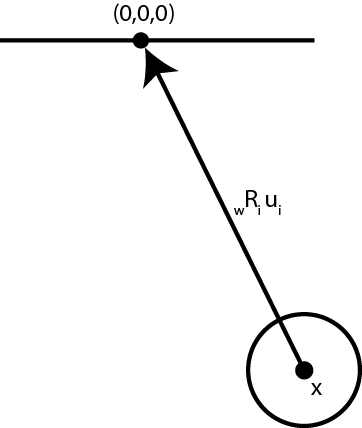

Forward kinematics
Forward kinematics is the process of determining the location and orientation of a designated point on a robot as a function of the robot's configuration.
Constraining the movement of rigid bodies
In a previous learning module, we learned that rigid bodies have six degrees of freedom: three for translation and three for rotation. Rigid robots are composed of a number of these rigid bodies (which we call “links”) and some constraints on the links’ motion (called “joints”). Some common joints are depicted below:


An example of constrained motion
The Foucault pendulum was devised as an experiment to demonstrate the rotation of the Earth. It consists of a bob suspended from the ceiling by a long wire.

If we assume that the wire is massless, then the only rigid body is the pendulum bob (since the ceiling is massive and effectively still, we do not consider it). If the ceiling is located at the origin of the world \(\begin{bmatrix}0 & 0 & 0\end{bmatrix}^\mathsf{T}\), then the pendulum must satisfy the implicit equation:
\begin{equation} \mathbf{x} + \ _w\mathbf{R}_i \mathbf{u}_i = \mathbf{0} \label{eqn:ball-and-socket} \end{equation}
where \(\mathbf{x}\) is the center-of-mass of the bob, \(_w\mathbf{R}_i\) is the orientation of the bob, and \(\mathbf{u}_i\) is a vector from the center-of-mass of the bob to the origin of the world. These variables are depicted in the figure below.

Precise definition of forward kinematics
Forward kinematics can take multiple forms, depending on the output sought:
\begin{equation}
\mathbf{f}(\mathbf{q}) \to \begin{cases}
\mathbb{R}^2 & \textrm{ for Cartesian position in 2D} \
\mathbb{R}^3 & \textrm{ for Cartesian position in 3D} \
SO(2) & \textrm{ for planar orientation in 2D} \
SO(3) & \textrm{ for 3D orientation} \
SE(2) & \textrm{ for Cartesian position in 2D and planar orientation} \
SE(3) & \textrm{ for Cartesian position in 2D and 3D orientation}
\end{cases}
\end{equation}
The output of this function is in what is known as operational space: we use this generic term because of all of the possible mappings described above. To make these mappings more concrete, the planar orientation SO(2) is just an angle. Similarly, SE(2) is two real numbers plus an angle. These numbers are generally stacked into a vector like this:
\begin{equation}
\begin{bmatrix}
x\
y\
\theta
\end{bmatrix}
\end{equation}
though they are equally valid stacked like this:
\begin{equation}
\begin{bmatrix}
\theta\
x\
y
\end{bmatrix}
\end{equation}
or even like this:
\begin{equation}
\begin{bmatrix}
x\
\theta\
y
\end{bmatrix}
\end{equation}
Another possibility is using a \(3 \times 3\) homogeneous transformation matrix:
\begin{equation}
\begin{bmatrix}
c_{\theta} & -s_{\theta} & x \
s_{\theta} & c_{\theta} & y \
0 & 0 & 1
\end{bmatrix}
\end{equation}
where \(c_{\theta}\) means \(\cos{\theta}\) and \(s_{\theta}\) means \(\sin{\theta}\).
We will see shortly how this representation can be useful.
3D orientation can be described using any of the representations in the learning module on 3D poses, include Euler angles, axis-angle, unit quaternions, or rotation matrices. The \(4 \times 4\) homogeneous transformation matrix is common:
\begin{equation}
\begin{bmatrix}
r_{11} & r_{12} & r_{13} & x \
r_{21} & r_{22} & r_{23} & y \
r_{31} & r_{32} & r_{33} & z \
0 & 0 & 0 & 1
\end{bmatrix}
\end{equation}
An example
Consider a double pendulum in 2D with two joint angles, \(q_1\) and \(q_2\), and link lengths \(\ell_1\) and \(\ell_2\). We will focus on the pendulum’s endpoint location and orientation. Because the pendulum is in 2D, its forward kinematics function maps to SE(2).
The configuration of the pendulum in SE(2), using a \(3 \times 3\) homogeneous transformation matrix, when \(q_1 = 0, q_2 = 0\) is:
\begin{equation}
\begin{bmatrix}
1 & 0 & \ell_1 + \ell_2 \
0 & 1 & 0 \
0 & 0 & 1
\end{bmatrix}
\end{equation}
What is the operational space configuration of the endpoint at generalized configuration \(q_1 = \frac{\pi}{2}, q_2 = \frac{-\pi}{2}\)?
We will use the following reference frames.
\begin{align}
_w\mathbf{T}_1 & \equiv
\begin{bmatrix}
c_1 & -s_1 & 0 \
s_1 & c_1 & 0 \
0 & 0 & 1
\end{bmatrix}\\
_1\mathbf{T}_{1’} & \equiv
\begin{bmatrix}
1 & 0 & \ell_1 \
0 & 1 & 0 \
0 & 0 & 1
\end{bmatrix}\
_{1’}\mathbf{T}_{2} & \equiv
\begin{bmatrix}
c_2 & -s_2 & 0 \
s_2 & c_2 & 0 \
0 & 0 & 1
\end{bmatrix}\\
_2\mathbf{T}_{2’} & \equiv
\begin{bmatrix}
1 & 0 & \ell_2 \
0 & 1 & 0 \
0 & 0 & 1
\end{bmatrix}
\end{align}
where \(c_1, s_1, c_2, s_2\) denote \(\cos{q_1}, \sin{q_1}, \cos{q_2}, \sin{q_2}\), respectively.
When we substitute \(q_1 = \frac{\pi}{2}, q_2 = \frac{-\pi}{2}\) and multiply \(_w\mathbf{T}_1 \cdot\ _1\mathbf{T}_{1’} \cdot _{1’}\mathbf{T}_2 \cdot _{2}\mathbf{T}_{2’}\), we arrive at:
\begin{equation}
_w\mathbf{T}_{2’} = \begin{bmatrix}
c_{1}c_2 - s_1s_2 & -c_2s_1 - c_1s_2 & l_1 c_1 + l_2 (c_{1}c_2 - s_1s_2) \
c_2s_1 + c_1s_2 & c_1 c_2 - s_1s_2 & l_1 s_1 + l_2 (c_2s_1 + c_1s_2) \
0 & 0 & 1
\end{bmatrix}
\end{equation}
which simplifies to (I used Macsyma to do the simplification):
\begin{equation}
_w\mathbf{T}_{2’} = \begin{bmatrix}
c_{1+2} & -s_{1+2} & l_1 c_1 + l_2 c_{1+2} \
s_{1+2} & c_{1+2} & l_1 s_1 + l_2 s_{1+2} \
0 & 0 & 1
\end{bmatrix}
\end{equation}
The upper left \(2 \times 2\) part of this matrix gives the orientation of the second link. The upper right \(2 \times 1\) part of this matrix gives the position of the end point of the second link.
Denavit-Hartenberg parameters
If a robot manufacturer draws a figure providing the data above, you might make a mistake computing the forward kinematics function (particularly as we move from two joints to, say, seven). The Denavit-Hartenberg parameters provide a more compact, less error prone encoding using four parameters per reference frame.
Here is a nice video depicting Denavit-Hartenberg.
The nice part of D-H parameters is that a simple algorithm can compute the forward kinematics for a robot given a small table of parameters. I personally skip using D-H parameters because I find that determining them is error prone. D-H parameters transfer the likelihood of making an error from the forward kinematics programmer to the robotics manufacturer.
Determining a robot’s number of degrees-of-freedom
For a robot affixed to its environment, the robot’s degrees of freedom (DoF) is equal to its number of joint variables (if the robot has kinematic loops, its DOF is equal to its independent joint variables).

If a robot is not affixed to its environment, we say that its base is “floating”, and that robot has six degrees of freedom plus its number of independent joint variables. In fact, a minimum (there may be more than one) set of variables used to specify a robot’s configuration is known as minimum coordinates or independent coordinates.
As a quick aside, there may not be an actuator at every joint. If the number of actuators is fewer than the robot’s DoF, we say that the robot is underactuated. Such robots are particularly challenging to control. Legged robots, for instance, are underactuated, as are quadrotors.
An alternative approach to determining the number of degrees of freedom
Each rigid body in three dimensions has six degrees of freedom (three translation, three rotation). So, multiply the number of robot links by six, and then subtract the total number of constraint equations.
For the example of the Foucault pendulum, there is one rigid body (the body) and three constraint equations (Equation \ref{eqn:ball-and-socket}; note the vector form of the equation). The total number of degrees-of-freedom is therefore \(6 - 3 = 3\).